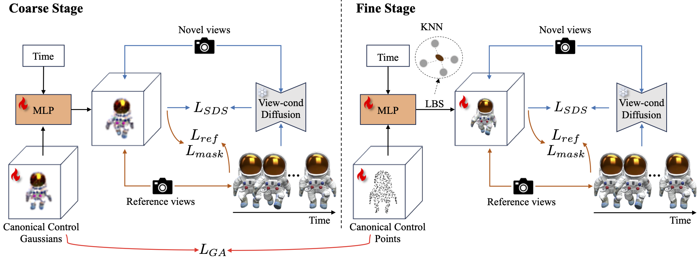
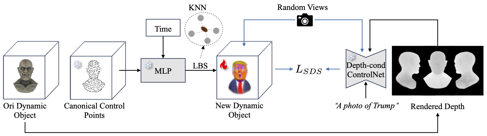

Recent advances in 2D/3D generative models enable the generation of dynamic 3D objects from a single-view video. Existing approaches utilize score distillation sampling to form the dynamic scene as dynamic NeRF or dense 3D Gaussians. However, these methods struggle to strike a balance among reference view alignment, spatio-temporal consistency, and motion fidelity under single-view conditions due to the implicit nature of NeRF or the intricate dense Gaussian motion prediction. To address these issues, this paper proposes an efficient, sparse-controlled video-to-4D framework named SC4D, that decouples motion and appearance to achieve superior video-to-4D generation. Moreover, we introduce Adaptive Gaussian (AG) initialization and Gaussian Alignment (GA) loss to mitigate shape degeneration issue, ensuring the fidelity of the learned motion and shape. Comprehensive experimental results demonstrate that our method surpasses existing methods in both quality and efficiency. In addition, facilitated by the disentangled modeling of motion and appearance of SC4D, we devise a novel application that seamlessly transfers the learned motion onto a diverse array of 4D entities according to textual descriptions.
Given a single-view reference video, video-to-4D methods aim to recover a plausible dynamic 3D object that aligns with the video source. In this work, we propose a two-stage video-to-4D framework based on sparse control points, named SC4D, which utilizes separated modeling of appearance and motion to yield superior outcomes. In the coarse stage, we initialize control points as sphere Gaussians and learn a deformation MLP to predict the movements of these control points. Then in the fine stage, we utilize these control points to drive dense Gaussians in the LBS manner, and jointly optimize the appearance and motion together to obtain the final dynamic object. To ensure the fidelity of learned shape and motion in the fine stage, we introduce Adaptive Gaussian (AG) initialization based on control points, and Gaussian Alignment (GA) loss as an additional constraint.
Utilizing our video-to-4D framework, we can successfully extract the resultant dynamic 3D object as well as its motion represented by a set of moving control points. Leveraging this capability, we devise an application tailored for motion transfer predicated on the trajectories of these sparse control points. This application aims to synthesize dynamic objects of distinct entities that exhibit identical motion patterns, all instantiated through text descriptions. To achieve this, we fix the parameters of control points and deformation MLP to ensure motion indentity. Then we re-initialize the video-to-4D results using AG inialization, and adopt a depth-condition ControlNet as guidance to optimize the new dynamic object without motion degeneration.
Ref
Consistent4D
4DGen
Ours
@article{wu2024sc4d,
author = {Wu, Zijie and Yu, Chaohui and Jiang, Yanqin and Cao, Chenjie and Wang Fan and Bai, Xiang.},
title = {SC4D: Sparse-Controlled Video-to-4D Generation and Motion Transfer},
journal = {arXiv},
year = {2024},
}